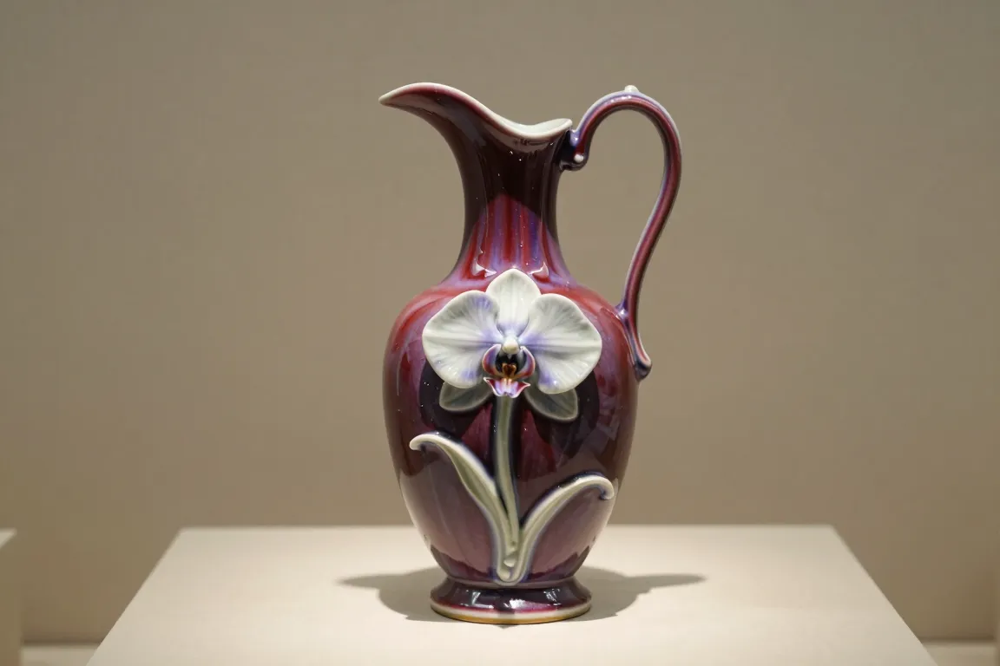

Vessels of 1893 to 1914 with flowing plant forms and deep glaze effects. French potters fired flambé stoneware, and Dutch and Danish works made thin porcelain with crystal and underglaze colour.

Core thesis
A vase grows like a plant: its form follows one living curve, and the glaze flows over it in deep colour.
Design principles
Draw the outline as one long S-curve, from a narrow foot to a swelling shoulder and a flaring lip.
Model plant, insect and female forms in low relief that the glaze softens.
Fire copper-red and flambé glazes in reduction at about 1280 °C, so that red, purple and blue run together.
Grow crystals in a zinc-silicate glaze by a slow cool of 20 to 30 hours.
Pare eggshell porcelain to 1 mm, so that the wall is translucent.
Paint underglaze flowers in soft grey, green and blue, with a spray ground that fades at the edge.
Keep the surface asymmetric: let a handle, a stem or a wave break the axis.
Sign the base with the name or the cipher of the maker and a pottery mark.